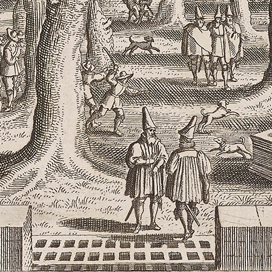
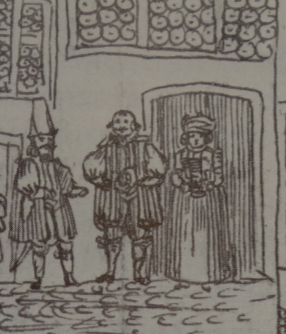

WITH HIS LONG CAP


The Basel scholar and Anglophile Johann Jacob Frey (1606–1636) was not enthusiastic when the University of his hometown offered him a chair in Greek in 1634. He would much rather have continued to work in Britain, which he had loved ever after first arriving in 1627. However, he did not have any serious job prospects after his pupil Richard Boyle, Viscount Dungarvan, had got married, and so Frey returned to Basel in the summer of 1635 to take up his professorship. By November, he had also got married to a young local gentlewoman.
A charming amateur sketch which was made on the wedding day shows Frey next to his bride Catharina Güntzer in the full formal gear that Basel citizens and especially academics were expected to wear. This included one of the curious high hats which Basel was famous for; Frey seems to be carrying his in his hand, while the (best?) man next to him is wearing it. Thomas Coryate's travel report Coryat's Crudities (1607) mentions "a strange kinde of hat, wherin they differ from all other Switzers that I saw in Helvetia", and an engraving by Matthäus Merian shows the leafy "Petersplatz" where several slightly absurd-hatted gentlemen are taking the air.
It is highly probable that Frey found this parochially pompous outfit uncongenial; the stylish Vandyke beard and loose hair in the portrait he had probably had painted in Holland are very different from the patriarchal beards and skullcaps of his superiors and colleagues at Basel University, and would really not have gone well with the "strange hat". The first letter which his former pupil Richard Boyle sent to Frey after his return to Basel may indeed be mocking this kind of inelegant uniform. The address says: "For Mr Frey with his long cap" and adds a little doodle which seems to indicate that the young Viscount Dungarvan had little idea of what what his tutor and friend might have looked like once he was dressed as a proper citizen of Basel.
Regula Hohl Trillini